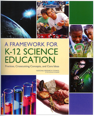
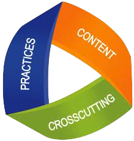

Science education in the United States is at an exciting crossroads. Evidence of this includes a new national framework and upcoming national standards:
|
A Framework for K-12 Science Education: Practices, Crosscutting Concepts, and Core Ideas was assembled by the National Research Council and is available from the National Academies Press. |
The new Next Generation Science Standards developed by Achieve. The NGSS are based on the Framework and will prepare students for college and careers. |
The Frameworks' vision for science and engineering education is that students actively engage in science and engineering practices and apply crosscutting concepts to deepen their understanding of a limited number of disciplinary core ideas (content). These are the three dimensions of the Framework.
The Responsive Teaching in Science project has examples of students doing just that. Engaging in scientific practices is the backbone of responsive teaching, and in doing so students naturally encounter crosscutting concepts in science.
The teaching in our project occurred prior to the development of the NGSS, thus the set of core ideas at each grade level in the NGSS was not necessarily the set of ideas developed in our project. However, the examples showcased here are true to the spirit of the NGSS:
A model for condensation. Carolyn H.'s fifth grade glass proposes several models to explain the condensation on a cold cup. As they sort through their models, the class begins to infer that moisture in the air collects to form the condensation.
A model for water in the air. In the process of explaining condensation inside a closed aquarium, Bonnie's class comes up with small particles too tiny to be seen as a model for water in the air.
Force, motion and toy cars (Grade 3). Carolyn V.'s third grade class uses pushing and motion ideas to explain what makes a propeller car and a balloon car move. In particular, students: offer causal explanations; communicate their explanations and other ideas through text, diagrams and discussion; and propose different ways for how to make the propeller car go faster and farther.
Force, motion and toy cars (Grade 2). Carolyn V.'s second grade class explores what makes a propeller car and balloon car move. There are interesting similarities to the third grade exploration, but owing to the different class composition and the nature of responsive teaching, the details of this exploration differ from the one in the third grade.